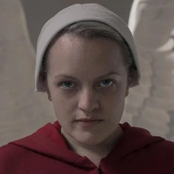
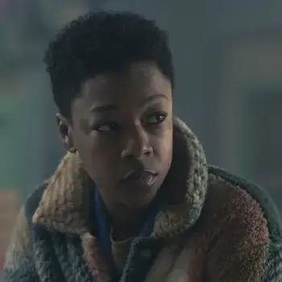
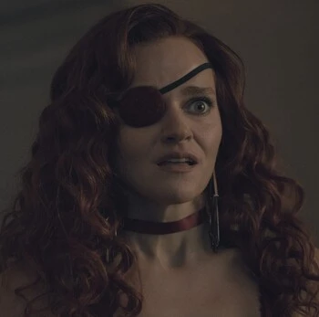
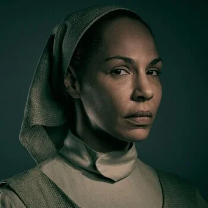
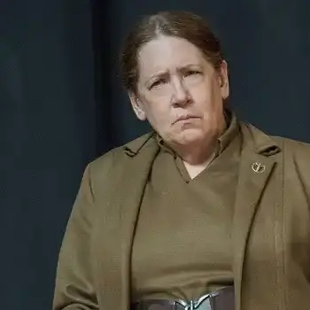
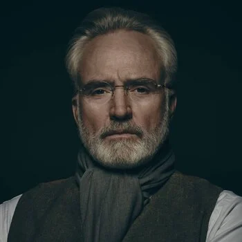

Personajes
Las Fuerzas
Opresores y Rebeldes de Gilead
Resistencia y Aliados
Esta sección está dedicada a aquellos personajes que sobreviven y luchan contra la República de Gilead, para poder recuperar sus libertades y derechos más básicos.
En esta sección encontraremos aquellos personajes que representan la resistencia: desde quienes combatieron de forma encubierta en el propio territorio a través de Mayday, hasta quienes sufrieron su violencia directa o lograron escapar al exilio en Canadá, y dar apoyo desde ahí.
{kind=link}

June Osborne
Es la líder de la Rebelión y la cara de Mayday. Pasa de ser una mujer común, a una guerrera que lucha por su hija.
{kind=link}
Luke Bankole
Esposo de June y refugiado en Canadá. Lucha desde Toronto por salvar y reconstruir a su familia.
{kind=link}

Moira Strand
La mejor amiga de June. Es activista en Canadá. Ayuda a los refugiados en Toronto, tras sobrevivir a su paso por Jezebel.
{kind=link}
Dra. Emily Malek
Fue profesora universitaria, hoy es una rebelde de Mayday y una de las criadas más valientes y castigadas de Gilead.
{kind=link}

Janine Lindo
Criada que como todas, lucha por su vida. También es un ejemplo de resiliencia, pese a su aparente fragilidad mental.
{kind=link}

Rita Blue
Martha de la casa Waterford. Personaje clave en la resistencia, logra escapar a Canadá y se convierte en aliada.
{kind=link}
{kind=link}
El Régimen de Gilead
Esta sección está dedicada a los pilares, mandatarios y cómplices que sostienen la República de Gilead.
Aquí encontraremos a los miembros de la élite dominante, desde los comandantes en la cúspide, pasando por las esposas que administran los hogares de la alta sociedad, hasta las tías, encargadas de la supervisión, entrenamiento y el control de las criadas.
{kind=link}
{kind=link}
{kind=link}

Tía Lydia Clements
Líder de las Tías, encargada de entrenar y controlar a las Criadas, tanto en el Centro Rojo como fuera de él
{kind=link}

Joseph Lawrence
El Arquitecto económico de Gilead, diseñador de las Colonias, con una lealtad ambigua.
{kind=link}
{kind=link}
{kind=link}
"Nunca deberían habernos dado uniformes, si no querían que fuéramos un ejército."